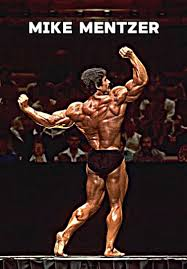
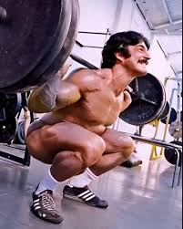
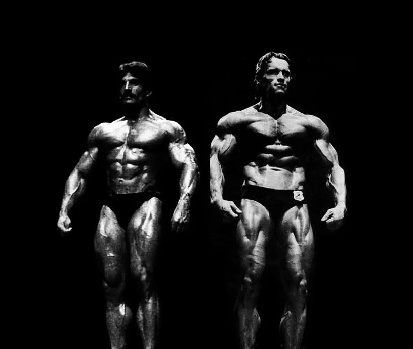

Mike Mentzer y el método Heavy Duty

Mike Mentzer fue uno de los culturistas más diferentes e inteligentes de su época. Mientras la mayoría entrenaba demasiadas horas todos los días, Mike defendía entrenamientos cortos pero extremadamente intensos.
Actualmente muchos sigmas siguen hablando sobre él porque varias de sus ideas parecen adelantadas a su tiempo.
“El músculo no crece mientras entrenas, crece mientras descansas.”
¿Qué es Heavy Duty?
Heavy Duty fue el sistema de entrenamiento creado por Mike Mentzer. Este método se enfocaba en pocas series, máxima intensidad y suficiente descanso muscular.

Mike pensaba que muchas rutinas tradicionales eran exageradas y solamente provocaban fatiga innecesaria.
Por eso defendía entrenamientos más inteligentes y eficientes. Según él, no era necesario vivir dentro del gimnasio para progresar.
Muchas rutinas Heavy Duty tenían solamente una o dos series fuertes por ejercicio, pero llevadas casi al fallo muscular.
La rivalidad con Arnold Schwarzenegger
Mike Mentzer tuvo muchos problemas con Arnold Schwarzenegger, especialmente después del Mr. Olympia 1980.

Muchos fanáticos consideran que Arnold era un faltón con otros competidores. Varias personas cuentan que hacía comentarios para afectar mentalmente a sus rivales antes de competir.
Una de las historias más conocidas es que Arnold mencionaba defectos físicos o lesiones de otros culturistas para hacerlos perder confianza.
Mike nunca estuvo de acuerdo con eso y criticó bastante cómo funcionaba el culturismo profesional.
El Mr. Olympia de 1980 sigue siendo uno de los campeonatos más polémicos de la historia. Mucha gente todavía piensa que hubo favoritismo.
Por qué Mike Mentzer se retiró
Mike Mentzer terminó alejándose del culturismo profesional porque sentía que el deporte estaba lleno de corrupción y favoritismos.
Después del Mr. Olympia 1980 quedó muy decepcionado con los jueces y con la manera en que funcionaban las competencias.
Mike pensaba que el culturismo había dejado de enfocarse solamente en el físico y comenzó a depender demasiado de popularidad e influencias.
Por esa razón decidió retirarse poco a poco y enfocarse más en enseñar su filosofía Heavy Duty.
El capitán del barco probablemente diría que Mike fue una de las pocas personas que se atrevió a hablar abiertamente sobre los problemas dentro del culturismo profesional.
Legado de Mike Mentzer
Aunque nunca ganó un Mr. Olympia, Mike Mentzer sigue siendo muy respetado. Muchas personas consideran que cambió completamente la forma de entender el entrenamiento.
Actualmente muchos atletas naturales usan principios similares al Heavy Duty, enfocándose más en recuperación, intensidad y progreso real.